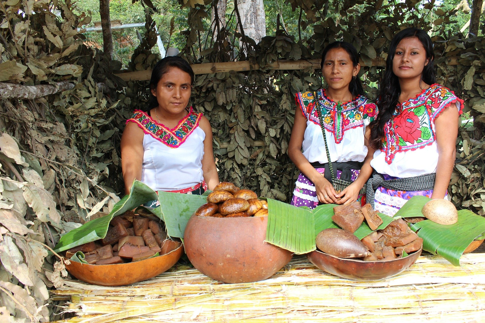
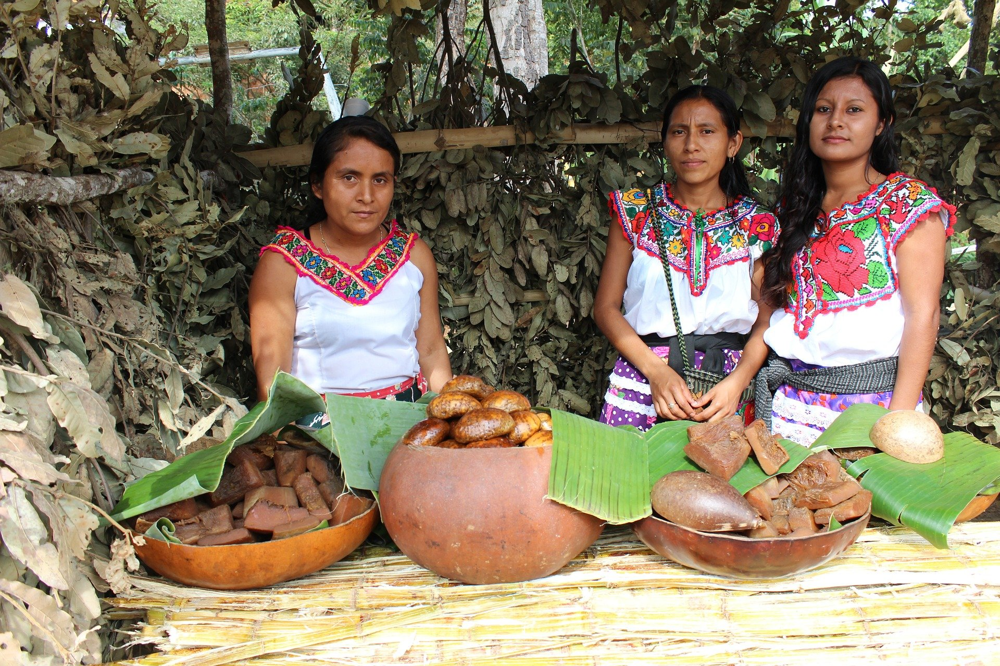

Contactos y Recursos
Si deseas obtener más información, colaborar o profundizar en el conocimiento sobre las comunidades indígenas,
aquí encontrarás recursos útiles y formas de contacto.
Formulario de contacto:
Si eres parte de un proyecto social o educativo, o simplemente quieres comunicarte con nosotros,
completa el formulario de contacto y con gusto atenderemos tu solicitud.
Enlaces a organizaciones que apoyan a los pueblos indígenas:
Accede a sitios web de instituciones y proyectos que trabajan por la preservación de las culturas indígenas
y la defensa de sus derechos.
- Instituto Nacional de los Pueblos Indígenas
- Consejo Nacional de los Pueblos Indígenas
- El Programa para el Bienestar Integral de los Pueblos Indígenas (PROBIPI)
- Pueblos indígenas y afrodescendientes
- El ACNUDH y los pueblos indígenas
Bibliografía y fuentes recomendadas:
Consulta libros, artículos y estudios que profundizan en la historia, costumbres y problemáticas de los pueblos indígenas.
- "Los pueblos indígenas de América Latina" Ricardo Pérez Montfort
Este libro ofrece una visión integral sobre los pueblos indígenas en América Latina, explorando su historia, organización social, creencias religiosas, y su situación en el contexto contemporáneo. - "Cultura y política en los pueblos indígenas de México" de Carlos Rojas
Este texto profundiza en las costumbres, la organización social y política de los pueblos indígenas mexicanos, así como en los desafíos sociales y políticos que enfrentan. - "La historia de los pueblos indígenas de América" de Howard Zinn
En este libro, Zinn aborda la historia de los pueblos indígenas desde la llegada de los colonizadores europeos, poniendo énfasis en la resistencia y las luchas por la preservación de sus culturas y tierras. - "El movimiento indígena en América Latina: Una mirada desde los derechos humanos" (Revista de Estudios Políticos)
Este artículo aborda la evolución del movimiento indígena en América Latina, especialmente en relación con el reconocimiento de derechos y las luchas por la autodeterminación. - "Las problemáticas contemporáneas de los pueblos indígenas: El impacto de la globalización" (Revista de Antropología Social)
Un análisis crítico sobre cómo la globalización afecta las formas de vida, la cultura y los territorios de los pueblos indígenas.

 
